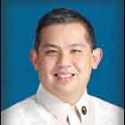
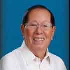
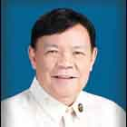

| History |
| Legislators |
| Laws |
| About |
 |
| LEGISLATORS |
| LEGISLATIVE BODY (YEAR) | INCLUSIVE YEARS | LEGISLATIVE DISTRICT/PROVINCE | LEGISLATOR | ||
| 1 | 1st Philippine Legislature | 1907 - 1909 | 1st District Leyte | ALKUINO, Quiremon |  |
| 2 | 1st Philippine Legislature | 1907 - 1909 | 2nd District Leyte | DEMETRIO, Salvador K. |  |
| 3 | 1st Philippine Legislature | 1907 - 1909 | 3rd District Leyte | PEÑARANDA, Florentino |  |
| 4 | 1st Philippine Legislature | 1907 - 1909 | 4th District Leyte | DE VEYRA, Jaime C. |  |
| 5 | 2nd Philippine Legislature | 1910 - 1912 | 1st District Leyte | GRANADOS, Estanislao |  |
| 6 | 2nd Philippine Legislature | 1910 - 1912 | 2nd District Leyte | ZIALCITA, Francisco |  |
| 7 | 2nd Philippine Legislature | 1910 - 1912 | 3rd District Leyte | MARCHADESCH, Abdon | |
| 8 | 2nd Philippine Legislature | 1910 - 1912 | 4th District Leyte | DE VEYRA, Jaime C. | |
| 9 | 3rd Philippine Legislature | 1912 - 1915 | 4th District Leyte | ENAGE, Francisco D. |  |
| 10 | 3rd Philippine Legislature | 1912 - 1916 | 1st District Leyte | GRANADOS, Estanislao | |
| 11 | 3rd Philippine Legislature | 1912 - 1916 | 2nd District Leyte | COSTAS, Dalmacio R. |  |
| 12 | 3rd Philippine Legislature | 1912 - 1916 | 3rd District Leyte | ROMUALDEZ, Miguel |  |
| 13 | 3rd Philippine Legislature | 1915 - 1915 | 4th District Leyte | KAPUNAN, Ruperto |  |
| 14 | 4th Philippine Legislature | 1916 - 1919 | 1st District Leyte | VELOSO, Manuel B. | |
| 15 | 4th Philippine Legislature | 1916 - 1919 | 2nd District Leyte | COSTAS, Dalmacio R. | |
| 16 | 4th Philippine Legislature | 1916 - 1919 | 3rd District Leyte | APOSTOL, Segundo |  |
| 17 | 4th Philippine Legislature | 1916 - 1919 | 4th District Leyte | KAPUNAN, Ruperto | |
| 18 | 5th Philippine Legislature | 1919 - 1922 | 1st District Leyte | ENAGE, Francisco D. | |
| 19 | 5th Philippine Legislature | 1919 - 1922 | 2nd District Leyte | KANGLEON, Ciriaco K. | |
| 20 | 5th Philippine Legislature | 1919 - 1922 | 3rd District Leyte | SIAYNGCO, Julio |  |
| 21 | 5th Philippine Legislature | 1919 - 1922 | 4th District Leyte | KAPUNAN, Ruperto | |
| 22 | 6th Philippine Legislature | 1922 - 1925 | 1st District Leyte | TAN, Carlos S. |  |
| 23 | 6th Philippine Legislature | 1922 - 1925 | 2nd District Leyte | OPPUS, Tomas G. |  |
| 24 | 6th Philippine Legislature | 1922 - 1925 | 3rd District Leyte | VELOSO, Jose Ma. |  |
| 25 | 6th Philippine Legislature | 1922 - 1925 | 4th District Leyte | MONTEJO, Filomeno |  |
| 26 | 7th Philippine Legislature | 1925 - 1927 | 1st District Leyte | VELOSO, Juan | |
| 27 | 7th Philippine Legislature | 1925 - 1927 | 2nd District Leyte | OPPUS, Tomas G. | |
| 28 | 7th Philippine Legislature | 1925 - 1927 | 3rd District Leyte | KAPUNAN, Ruperto | |
| 29 | 7th Philippine Legislature | 1925 - 1927 | 4th District Leyte | MONTEJO, Filomeno | |
| 30 | 8th Philippine Legislature | 1928 - 1930 | 1st District Leyte | TORRES, Bernardo | |
| 31 | 8th Philippine Legislature | 1928 - 1930 | 2nd District Leyte | OPPUS, Tomas G. | |
| 32 | 8th Philippine Legislature | 1928 - 1930 | 3rd District Leyte | DELGADO, Jorge B. |  |
| 33 | 8th Philippine Legislature | 1928 - 1930 | 4th District Leyte | BAYAYA, Cirilo | |
| 34 | 9th Philippine Legislature | 1931 - 1934 | 1st District Leyte | TAN, Carlos S. | |
| 35 | 9th Philippine Legislature | 1931 - 1934 | 2nd District Leyte | YBAÑEZ, Pacifico | |
| 36 | 9th Philippine Legislature | 1931 - 1934 | 3rd District Leyte | OPPUS, Tomas G. | |
| 37 | 9th Philippine Legislature | 1931 - 1934 | 4th District Leyte | BAYAYA, Cirilo | |
| 38 | 9th Philippine Legislature | 1931 - 1934 | 5th District Leyte | KAPUNAN, Ruperto | |
| 39 | 10th Philippine Legislature | 1934 - 1935 | 1st District Leyte | TAN, Carlos S. | |
| 40 | 10th Philippine Legislature | 1934 - 1935 | 2nd District Leyte | TAN, Dominador M. |  |
| 41 | 10th Philippine Legislature | 1934 - 1935 | 3rd District Leyte | OPPUS, Tomas G. | |
| 42 | 10th Philippine Legislature | 1934 - 1935 | 4th District Leyte | SEVILLA, Fortunato M. |  |
| 43 | 10th Philippine Legislature | 1934 - 1935 | 5th District Leyte | DELGADO, Jorge B. | |
| 44 | 1st National Assembly (Commonwealth) | 1935 - 1938 | 1st District Leyte | VELOSO, Jose Ma. | |
| 45 | 1st National Assembly (Commonwealth) | 1935 - 1938 | 2nd District Leyte | TAN, Dominador M. | |
| 46 | 1st National Assembly (Commonwealth) | 1935 - 1938 | 3rd District Leyte | OPPUS, Tomas G. | |
| 47 | 1st National Assembly (Commonwealth) | 1935 - 1938 | 5th District Leyte | KAPUNAN, Ruperto | |
| 48 | 1st National Assembly (Commonwealth) | 1936 - 1936 | 4th District Leyte | ENAGE, Francisco D. | |
| 49 | 1st National Assembly (Commonwealth) | 1936 - 1938 | 4th District Leyte | ROMUALDEZ, Norberto |  |
| 50 | 2nd National Assembly (Commonwealth) | 1939 - 1939 | 5th District Leyte | KAPUNAN, Ruperto | |
| 51 | 2nd National Assembly (Commonwealth) | 1939 - 1941 | 1st District Leyte | TAN, Carlos S. | |
| 52 | 2nd National Assembly (Commonwealth) | 1939 - 1941 | 2nd District Leyte | TAN, Dominador M. | |
| 53 | 2nd National Assembly (Commonwealth) | 1939 - 1941 | 3rd District Leyte | OPPUS, Tomas G. | |
| 54 | 2nd National Assembly (Commonwealth) | 1939 - 1941 | 4th District Leyte | ROMUALDEZ, Norberto | |
| 55 | National Assembly (Japanese Regime) | 1943 - 1944 | Leyte | TORRES, Bernardo | |
| 56 | National Assembly (Japanese Regime) | 1943 - 1944 | Leyte | VELOSO, Jose Ma. | |
| 57 | 1st Congress of the Commonwealth (Liberation Period) | 1945 - 1945 | 1st District Leyte | CANONOY, Mateo |  |
| 58 | 1st Congress of the Commonwealth (Liberation Period) | 1945 - 1945 | 2nd District Leyte | TAN, Dominador M. | |
| 59 | 1st Congress of the Commonwealth (Liberation Period) | 1945 - 1945 | 3rd District Leyte | OPPUS, Tomas G. | |
| 60 | 1st Congress of the Commonwealth (Liberation Period) | 1945 - 1945 | 4th District Leyte | MONTEJO, Filomeno | |
| 61 | 1st Congress of the Commonwealth (Liberation Period) | 1945 - 1945 | 5th District Leyte | VELOSO, Jose Ma. | |
| 62 | 2nd Congress of the Commonwealth | 1946 - 0000 | 2nd District Leyte | VELOSO, Domingo |  |
| 63 | 2nd Congress of the Commonwealth | 1946 - 1946 | 1st District Leyte | TAN, Carlos S. | |
| 64 | 2nd Congress of the Commonwealth | 1946 - 1946 | 3rd District Leyte | PAJAO, Francisco |  |
| 65 | 2nd Congress of the Commonwealth | 1946 - 1946 | 4th District Leyte | PEREZ, Juan R. | |
| 66 | 2nd Congress of the Commonwealth | 1946 - 1946 | 5th District Leyte | CINCO, Atilano R. |  |
| 67 | 1st Congress of the Republic | 1946 - 1947 | 1st District Leyte | TAN, Carlos S. | |
| 68 | 1st Congress of the Republic | 1946 - 1949 | 2nd District Leyte | VELOSO, Domingo | |
| 69 | 1st Congress of the Republic | 1946 - 1949 | 3rd District Leyte | PAJAO, Francisco | |
| 70 | 1st Congress of the Republic | 1946 - 1949 | 4th District Leyte | PEREZ, Juan R. | |
| 71 | 1st Congress of the Republic | 1946 - 1949 | 5th District Leyte | CINCO, Atilano R. | |
| 72 | 1st Congress of the Republic | 1948 - 1949 | 1st District Leyte | MARTINEZ, Jose R. | |
| 73 | 2nd Congress of the Republic | 1950 - 1953 | 1st District Leyte | CANONOY, Mateo | |
| 74 | 2nd Congress of the Republic | 1950 - 1953 | 2nd District Leyte | VELOSO, Domingo | |
| 75 | 2nd Congress of the Republic | 1950 - 1953 | 3rd District Leyte | PAJAO, Francisco | |
| 76 | 2nd Congress of the Republic | 1950 - 1953 | 4th District Leyte | ROMUALDEZ, Daniel Z. |  |
| 77 | 2nd Congress of the Republic | 1950 - 1953 | 5th District Leyte | CINCO, Atilano R. | |
| 78 | 3rd Congress of the Republic | 1954 - 1957 | 1st District Leyte | TAN, Carlos S. | |
| 79 | 3rd Congress of the Republic | 1954 - 1957 | 2nd District Leyte | VELOSO, Domingo | |
| 80 | 3rd Congress of the Republic | 1954 - 1957 | 3rd District Leyte | PAJAO, Francisco | |
| 81 | 3rd Congress of the Republic | 1954 - 1957 | 4th District Leyte | ROMUALDEZ, Daniel Z. | |
| 82 | 3rd Congress of the Republic | 1954 - 1957 | 5th District Leyte | AGUJA, Alberto T. |  |
| 83 | 4th Congress of the Republic | 1958 - 1961 | 1st District Leyte | VELOSO, Marcelino R. |  |
| 84 | 4th Congress of the Republic | 1958 - 1961 | 2nd District Leyte | TAN, Dominador M. | |
| 85 | 4th Congress of the Republic | 1958 - 1961 | 3rd District Leyte | YÑIGUEZ, Nicanor E. |  |
| 86 | 4th Congress of the Republic | 1958 - 1961 | 4th District Leyte | ROMUALDEZ, Daniel Z. | |
| 87 | 4th Congress of the Republic | 1958 - 1961 | 5th District Leyte | AGUJA, Alberto T. | |
| 88 | 5th Congress of the Republic | 1962 - 1965 | 1st District Leyte | ROMUALDEZ, Daniel Z. | |
| 89 | 5th Congress of the Republic | 1962 - 1965 | 2nd District Leyte | VILLASIN, Primo A. |  |
| 90 | 5th Congress of the Republic | 1962 - 1965 | 3rd District Leyte | VELOSO, Marcelino R. | |
| 91 | 5th Congress of the Republic | 1962 - 1965 | 4th District Leyte | TAN, Dominador M. | |
| 92 | 6th Congress of the Republic | 1966 - 1969 | 1st District Leyte | MATE, Artemio E. |  |
| 93 | 6th Congress of the Republic | 1966 - 1969 | 2nd District Leyte | PARRENO, Salud Vivero |  |
| 94 | 6th Congress of the Republic | 1966 - 1969 | 3rd District Leyte | VELOSO, Marcelino R. | |
| 95 | 6th Congress of the Republic | 1966 - 1969 | 4th District Leyte | TAN, Dominador M. | |
| 96 | 7th Congress of the Republic | 1970 - 1972 | 1st District Leyte | MATE, Artemio E. | |
| 97 | 7th Congress of the Republic | 1970 - 1972 | 3rd District Leyte | VELOSO, Marcelino R. | |
| 98 | 7th Congress of the Republic | 1970 - 1972 | 4th District Leyte | RIVILLA, Rodolfo M. |  |
| 99 | Regular Batasang Pambansa | 1984 - 1986 | Leyte, Region VIII | VELOSO, Alberto S. |  |
| 100 | Regular Batasang Pambansa | 1984 - 1986 | Leyte, Region VIII | MATE, Artemio E. | |
| 101 | Regular Batasang Pambansa | 1984 - 1986 | Leyte, Region VIII | ROMUALDEZ, Benjamin T. |  |
| 102 | Regular Batasang Pambansa | 1984 - 1986 | Leyte, Region VIII | MELGAZO, Emiliano J. |  |
| 103 | Regular Batasang Pambansa | 1984 - 1986 | Leyte, Region VIII | ALDABA, Damian V. |  |
| 104 | 8th Congress of the Republic | 1987 - 1992 | 1st District Leyte | MONTEJO, Cirilo Roy G. |  |
| 105 | 8th Congress of the Republic | 1987 - 1992 | 2nd District Leyte | HORCA, Manuel Jr. L. |  |
| 106 | 8th Congress of the Republic | 1987 - 1992 | 3rd District Leyte | VELOSO, Alberto S. | |
| 107 | 8th Congress of the Republic | 1987 - 1992 | 4th District Leyte | LOCSIN, Carmelo J. |  |
| 108 | 8th Congress of the Republic | 1987 - 1992 | 5th District Leyte | LORETO, Eriberto V. |  |
| 109 | 9th Congress of the Republic | 1992 - 1995 | 1st District Leyte | MONTEJO, Cirilo Roy G. | |
| 110 | 9th Congress of the Republic | 1992 - 1995 | 2nd District Leyte | APOSTOL, Sergio A. F. |  |
| 111 | 9th Congress of the Republic | 1992 - 1995 | 3rd District Leyte | VELOSO, Alberto S. | |
| 112 | 9th Congress of the Republic | 1992 - 1995 | 4th District Leyte | LOCSIN, Carmelo J. | |
| 113 | 9th Congress of the Republic | 1992 - 1995 | 5th District Leyte | LORETO, Eriberto V. | |
| 114 | 10th Congress of the Republic | 1995 - 1998 | 1st District Leyte | MARCOS, Imelda R. |  |
| 115 | 10th Congress of the Republic | 1995 - 1998 | 2nd District Leyte | APOSTOL, Sergio A. F. | |
| 116 | 10th Congress of the Republic | 1995 - 1998 | 3rd District Leyte | VELOSO, Alberto S. | |
| 117 | 10th Congress of the Republic | 1995 - 1998 | 4th District Leyte | LOCSIN, Carmelo J. | |
| 118 | 10th Congress of the Republic | 1995 - 1998 | 5th District Leyte | LORETO, Eriberto V. | |
| 119 | 11th Congress of the Republic | 1998 - 2001 | 1st District Leyte | ROMUALDEZ, Alfred S. |  |
| 120 | 11th Congress of the Republic | 1998 - 2001 | 2nd District Leyte | APOSTOL, Sergio A. F. | |
| 121 | 11th Congress of the Republic | 1998 - 2001 | 3rd District Leyte | VELOSO, Eduardo K. |  |
| 122 | 11th Congress of the Republic | 1998 - 2001 | 4th District Leyte | LOCSIN, Ma. Victoria L. |  |
| 123 | 11th Congress of the Republic | 1998 - 2001 | 5th District Leyte | LORETO-GO, Ma. Catalina L. |  |
| 124 | 12th Congress of the Republic | 2001 - 2002 | 4th District Leyte | LOCSIN, Ma. Victoria L. | |
| 125 | 12th Congress of the Republic | 2001 - 2004 | 1st District Leyte | FAILON, Ted |  |
| 126 | 12th Congress of the Republic | 2001 - 2004 | 2nd District Leyte | APOSTOL, Trinidad G. |  |
| 127 | 12th Congress of the Republic | 2001 - 2004 | 3rd District Leyte | VELOSO, Eduardo K. | |
| 128 | 12th Congress of the Republic | 2001 - 2004 | 5th District Leyte | CARI, Carmen L. |  |
| 129 | 12th Congress of the Republic | 2002 - 2004 | 4th District Leyte | CODILLA, Eufrocino Sr. M. |  |
| 130 | 13th Congress of the Republic | 2004 - 2007 | 1st District Leyte | PETILLA, Remedios L. |  |
| 131 | 13th Congress of the Republic | 2004 - 2007 | 2nd District Leyte | APOSTOL, Trinidad G. | |
| 132 | 13th Congress of the Republic | 2004 - 2007 | 3rd District Leyte | VELOSO, Eduardo K. | |
| 133 | 13th Congress of the Republic | 2004 - 2007 | 4th District Leyte | CODILLA, Eufrocino Sr. M. | |
| 134 | 13th Congress of the Republic | 2004 - 2007 | 5th District Leyte | CARI, Carmen L. | |
| 135 | 14th Congress of the Republic | 2007 - 2010 | 1st District Leyte | ROMUALDEZ, Ferdinand Martin G. |  |
| 136 | 14th Congress of the Republic | 2007 - 2010 | 2nd District Leyte | APOSTOL, Trinidad G. | |
| 137 | 14th Congress of the Republic | 2007 - 2010 | 3rd District Leyte | SALVACION, Andres Jr. D. |  |
| 138 | 14th Congress of the Republic | 2007 - 2010 | 4th District Leyte | CODILLA, Eufrocino Sr. M. | |
| 139 | 14th Congress of the Republic | 2007 - 2010 | 5th District Leyte | CARI, Carmen L. | |
| 140 | 15th Congress of the Republic | 2010 - 2013 | 1st District Leyte | ROMUALDEZ, Ferdinand Martin G. | .jpg) |
| 141 | 15th Congress of the Republic | 2010 - 2013 | 2nd District Leyte | APOSTOL, Sergio F. |  |
| 142 | 15th Congress of the Republic | 2010 - 2013 | 3rd District Leyte | SALVACION, Andres Jr. D. | .jpg) |
| 143 | 15th Congress of the Republic | 2010 - 2013 | 4th District Leyte | GOMEZ, Lucy T. |  |
| 144 | 15th Congress of the Republic | 2010 - 2013 | 5th District Leyte | CARI, Jose Carlos L. |  |
| 145 | 16th Congress of the Republic | 2013 - 2016 | 1st District,Leyte | ROMUALDEZ, Ferdinand Martin G. |  |
| 146 | 16th Congress of the Republic | 2013 - 2016 | 2nd District,Leyte | APOSTOL, Sergio A. F. |  |
| 147 | 16th Congress of the Republic | 2013 - 2016 | 3rd District,Leyte | SALVACION, Andres Jr. D. |  |
| 148 | 16th Congress of the Republic | 2013 - 2016 | 4th District,Leyte | GOMEZ, Lucy T. | |
| 149 | 16th Congress of the Republic | 2013 - 2016 | 5th District,Leyte | CARI, Jose Carlos L. |

Congressional Library Bureau
Legislative Library Service